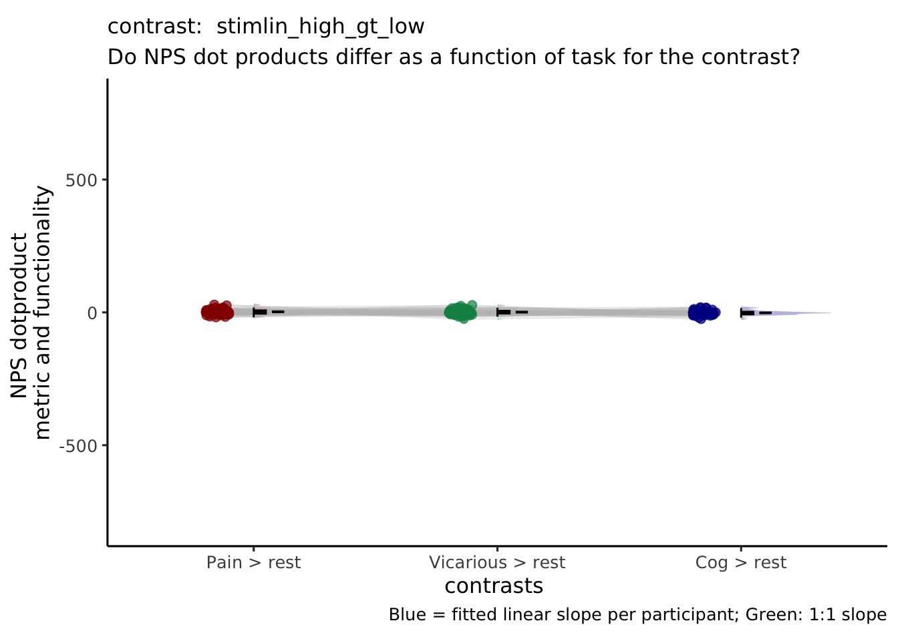
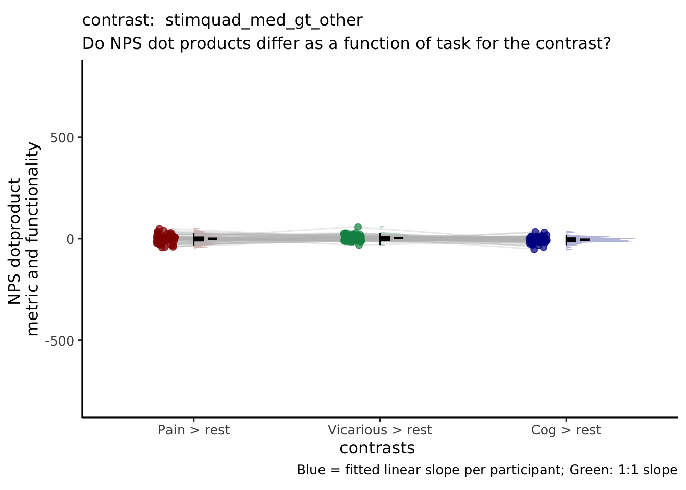
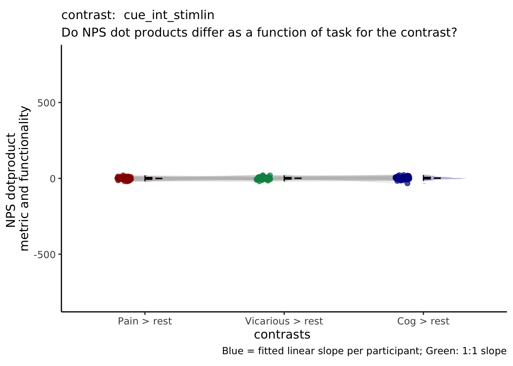
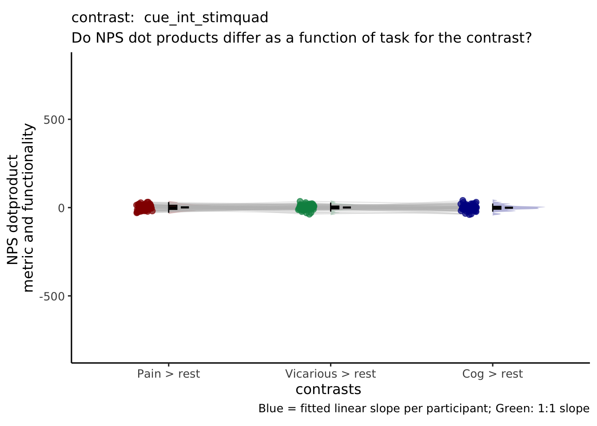

Chapter 19 nps_contrast ~ cue * stim
19.1 Overview
The purpose of this markdown is to plot the NPS extracted values for each contrast of interest
Steps 1. load and stack the files 2. plot per condition 3. x axis (pain vs. vicarious vs. cognitive) 4. y axis (NPS extracted values)
# contrast_name = {'P_VC_cue_high_gt_low', 'V_PC_cue_high_gt_low', 'C_PV_cue_high_gt_low', ...
# 'P_VC_stimlin_high_gt_low', 'V_PC_stimlin_high_gt_low', 'C_PV_stimlin_high_gt_low',...
# 'P_VC_stimquad_med_gt_other', 'V_PC_stimquad_med_gt_other', 'C_PV_stimquad_med_gt_other',...
# 'P_VC_cue_int_stimlin','V_PC_cue_int_stimlin', 'C_PV_cue_int_stimlin',...
# 'P_VC_cue_int_stimquad','V_PC_cue_int_stimquad','C_PV_cue_int_stimquad',...
# 'motor',...
# 'P_simple_cue_high_gt_low', 'V_simple_cue_high_gt_low', 'C_simple_cue_high_gt_low', ...
# 'P_simple_stimlin_high_gt_low', 'V_simple_stimlin_high_gt_low', 'C_simple_stimlin_high_gt_low',...
# 'P_simple_stimquad_med_gt_other', 'V_simple_stimquad_med_gt_other', 'C_simple_stimquad_med_gt_other',...
# 'P_simple_cue_int_stimlin', 'V_simple_cue_int_stimlin', 'C_simple_cue_int_stimlin',...
# 'P_simple_cue_int_stimquad','V_simple_cue_int_stimquad','C_simple_cue_int_stimquad'19.2 For loop for all the pvc dummy codes
main_dir = dirname(dirname(getwd()))
color <- c("Pain > rest" = "#941100",
"Vicarious > rest" = "#008F51",
"Cog > rest" = "#011891")
for (contrast_name in c( "stimlin_high_gt_low", "stimquad_med_gt_other", "cue_int_stimlin", "cue_int_stimquad")) {
merge_df = data.frame()
df = data.frame()
groupwise = data.frame()
subjectwise = data.frame()
for (conname in c('P_simple', 'V_simple', 'C_simple')) {
df = data.frame()
print(paste(contrast_name, conname))
npsdir = file.path(
main_dir,
'analysis',
'fmri',
'spm',
'univariate',
'model01_6cond',
'extract_nps'
)
df = read.csv(Sys.glob(file.path(
npsdir,
paste0(
'extract-nps_model01-6cond_con_*',
conname,
'_',
contrast_name,
'.csv'
)
)))
df$conname = char(conname)
merge_df = rbind(merge_df, df)
}
merge_df = as.data.frame(merge_df)
merge_df$contrast <-
recode_factor(
merge_df$conname,
P_simple = "Pain > rest",
V_simple = "Vicarious > rest",
C_simple = "Cog > rest"
)
merge_df$contrast <- as.factor(merge_df$contrast)
# print(summary(model.nps))
# parameters __________________________________________________________________
model = 'nps'
model_keyword = "nps"
subjectwise_mean = "mean_per_sub"
group_mean = "mean_per_sub_norm_mean"
iv = "contrast"
ylim = c(-800, 800)
se = "se"
subject = "subject"
ggtitle = paste0(model_keyword,
" :: extracted NPS value for taskwise contrast")
legend_title = "Contrasts"
xlab = "contrasts "
ylab = "NPS dotproduct \nmetric and functionality"
dv = "nps"
dv_keyword = "nps_dot_product"
classwise <- meanSummary(merge_df,
c(subject, iv), dv)
groupwise <- summarySEwithin(data = classwise,
measurevar = "mean_per_sub",
withinvars = c(iv))
subjectwise = subset(classwise, select = -c(sd))
p1 <- ggplot(data = subjectwise,
aes(
y = .data[[subjectwise_mean]],
x = factor(.data[[iv]]),
fill = factor(.data[[iv]])
)) +
geom_half_violin(
aes(fill = factor(.data[[iv]])),
side = 'r',
position = 'dodge',
adjust = 0.5,
trim = FALSE,
alpha = .3,
colour = NA
) +
geom_line(
data = subjectwise,
aes(
group = .data[[subject]],
x = as.numeric(factor(.data[[iv]])) - .15 ,
y = .data[[subjectwise_mean]],
fill = factor(.data[[iv]])
),
linetype = "solid",
color = "grey",
alpha = .3
) +
geom_point(
aes(
# group = .data[[subject]],
x = as.numeric(factor(.data[[iv]])) - .15 ,
y = .data[[subjectwise_mean]],
color = factor(.data[[iv]])
),
position = position_jitter(width = .05),
size = 2,
alpha = 0.7,
) +
geom_half_boxplot(
data = subjectwise,
aes(x = .data[[iv]],
y = .data[[subjectwise_mean]],
fill = .data[[iv]]),
side = "r",
outlier.shape = NA,
alpha = 0.8,
width = .1,
notch = FALSE,
notchwidth = 0,
varwidth = FALSE,
colour = "black",
errorbar.draw = FALSE
) +
geom_errorbar(
data = groupwise,
aes(
x = as.numeric(.data[[iv]]) + .1,
y = as.numeric(.data[[group_mean]]),
fill = factor(.data[[iv]]),
ymin = .data[[group_mean]] - .data[[se]],
ymax = .data[[group_mean]] + .data[[se]]
),
width = .05
) +
# legend stuff ________________________________________________________
guides(color = "none") +
guides(fill = guide_legend(title = legend_title)) +
scale_fill_manual(values = color) +
scale_colour_manual(values = color) +
ggtitle(ggtitle) +
# scale_x_discrete() +
xlab(xlab) +
ylab(ylab) +
ylim(ylim) +
theme_classic2() +
theme(aspect.ratio = 6 / 10) +
theme(
legend.position = "none",
text = element_text(family = "DejaVu Sans"),
plot.title = element_text(size = 12)
)
# plot description ________________________________________________________
p1 <- p1 +
labs(
title = paste("contrast: ", contrast_name),
subtitle = "Do NPS dot products differ as a function of task for the contrast?",
caption = "Blue = fitted linear slope per participant; Green: 1:1 slope"
)
print(p1)
savedir = file.path(
main_dir,
'analysis',
'mixedeffect',
'model10_iv-cue-stim_dv-nps',
as.character(Sys.Date())
)
dir.create(savedir, showWarnings = FALSE, recursive = TRUE)
save_fname <-
file.path(
savedir,
paste0('extract-nps_iv-',iv,'_dv-',dv_keyword,'_con-',contrast_name,'.png')
)
ggsave(
save_fname,
plot = p1,
# width = w,
unit = "in",
dpi = 600,
scale = 2.5
)
}## [1] "stimlin_high_gt_low P_simple"
## [1] "stimlin_high_gt_low V_simple"
## [1] "stimlin_high_gt_low C_simple"## Warning in geom_line(data = subjectwise, aes(group = .data[[subject]], x =
## as.numeric(factor(.data[[iv]])) - : Ignoring unknown aesthetics: fill## Warning in geom_errorbar(data = groupwise, aes(x = as.numeric(.data[[iv]]) + :
## Ignoring unknown aesthetics: fill## Saving 17.5 x 12.5 in image## [1] "stimquad_med_gt_other P_simple"
## [1] "stimquad_med_gt_other V_simple"
## [1] "stimquad_med_gt_other C_simple"## Warning in geom_line(data = subjectwise, aes(group = .data[[subject]], x = as.numeric(factor(.data[[iv]])) - : Ignoring unknown aesthetics: fill
## Ignoring unknown aesthetics: fill
## Saving 17.5 x 12.5 in image## [1] "cue_int_stimlin P_simple"
## [1] "cue_int_stimlin V_simple"
## [1] "cue_int_stimlin C_simple"## Warning in geom_line(data = subjectwise, aes(group = .data[[subject]], x = as.numeric(factor(.data[[iv]])) - : Ignoring unknown aesthetics: fill
## Ignoring unknown aesthetics: fill
## Saving 17.5 x 12.5 in image## [1] "cue_int_stimquad P_simple"
## [1] "cue_int_stimquad V_simple"
## [1] "cue_int_stimquad C_simple"## Warning in geom_line(data = subjectwise, aes(group = .data[[subject]], x = as.numeric(factor(.data[[iv]])) - : Ignoring unknown aesthetics: fill
## Ignoring unknown aesthetics: fill
## Saving 17.5 x 12.5 in image